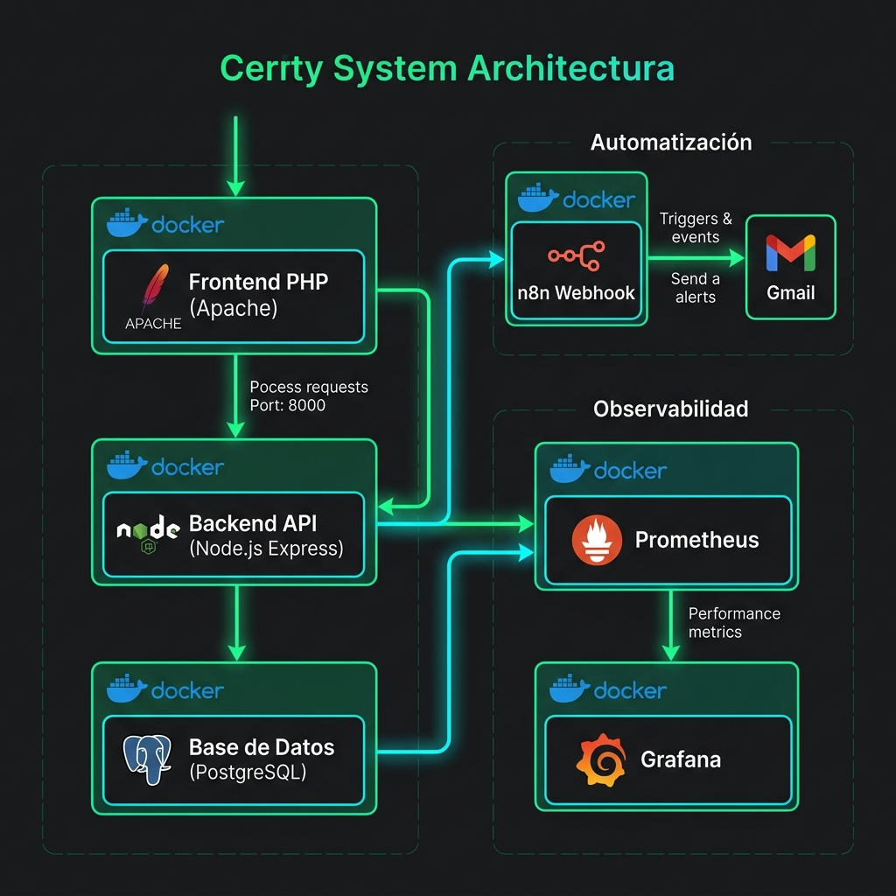
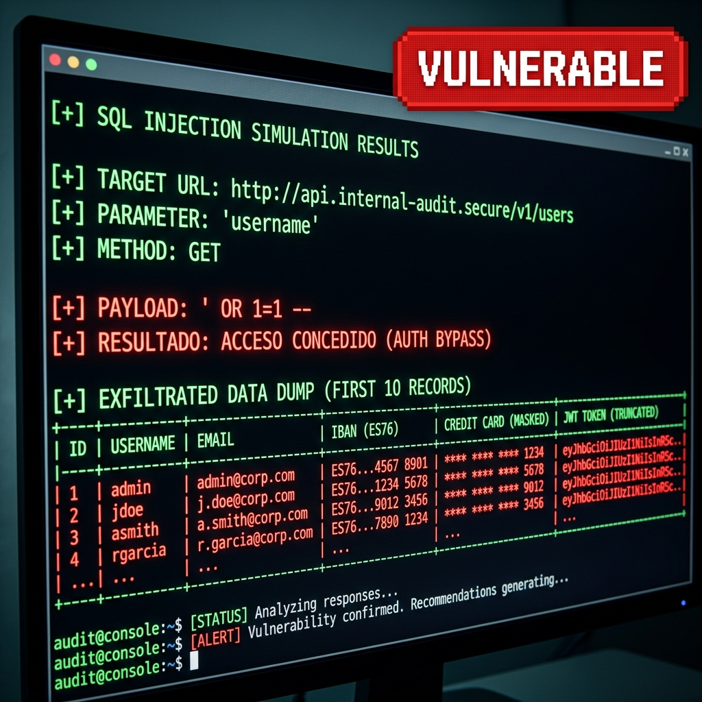
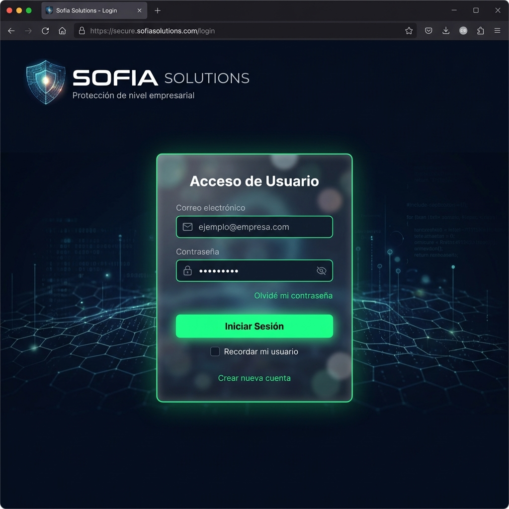
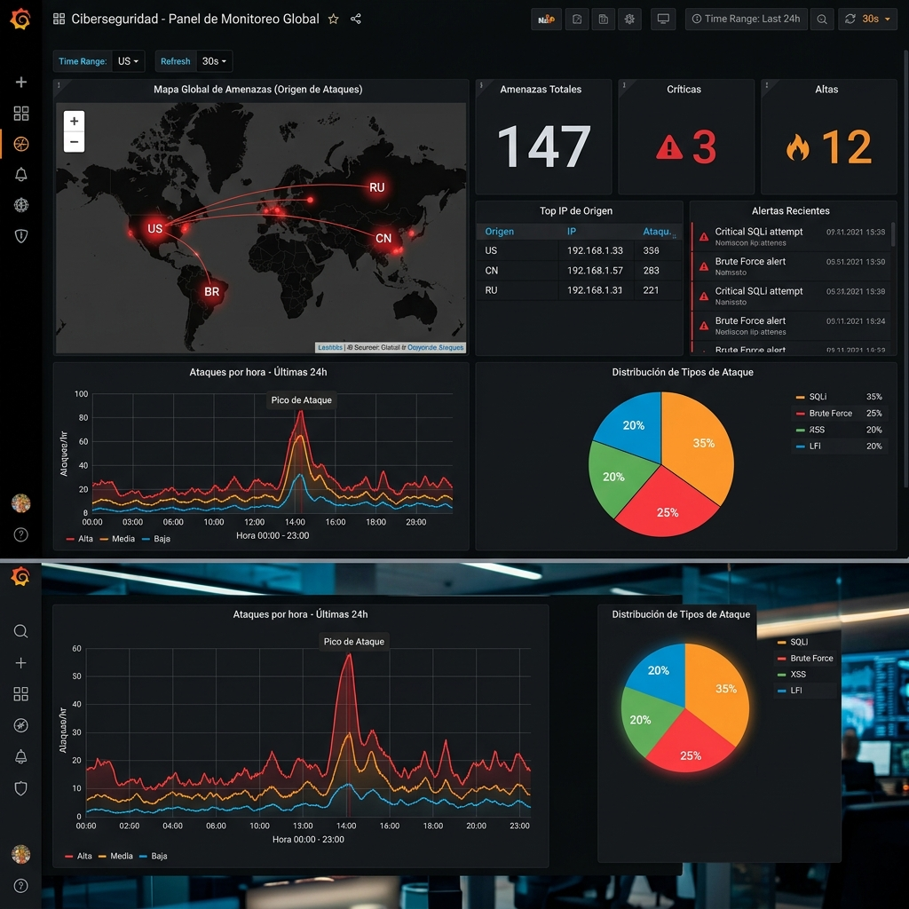
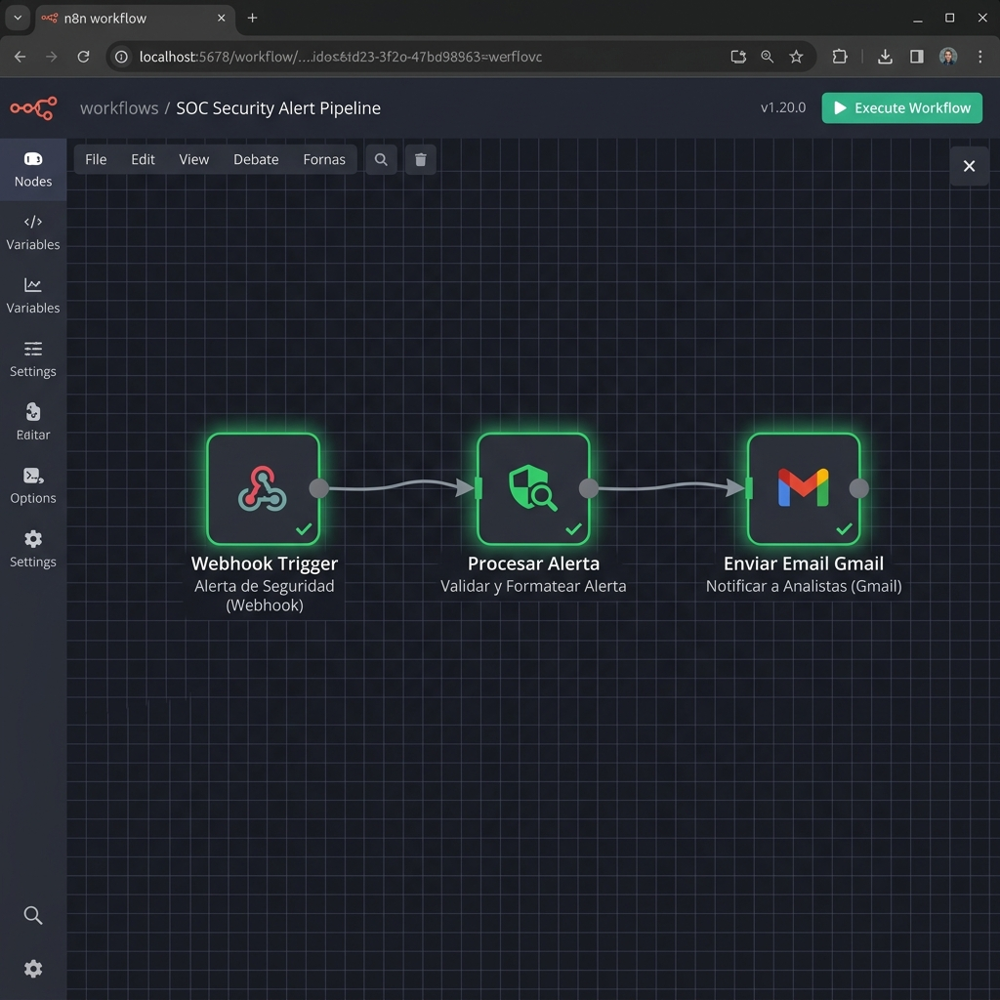

Entorno de Simulación Ofensiva, Defensa en Aplicación y Telemetría SOC
Un ecosistema interactivo y multi-cliente para entender los ataques web y aprender a bloquearlos de forma práctica.
A nivel corporativo, muchas empresas tienen problemas para ver de forma clara qué está pasando realmente en su red durante un ataque. Se instalan antivirus o cortafuegos por recomendación, pero no se comprende la relación directa entre la acción de un atacante, la vulnerabilidad del código y la alerta que llega al analista de seguridad.
Los laboratorios de clase suelen quedarse muy cortos porque son demasiado teóricos. Te enseñan a hackear una máquina o a configurar una regla, pero pocas veces ves cómo se integra todo junto (ataque, código vulnerable, protección de backend y monitorización en tiempo real).
Falta de relación entre lo que hace el atacante y lo que muestra la monitorización.
Los manuales enseñan cómo es el ataque pero no cómo se ve el bloqueo en el servidor.
Un laboratorio dual interactivo donde disparas ataques, activas defensas y ves los gráficos de monitorización en caliente.
Para que todo funcione sin problemas de forma local y sea fácil de mover, he empaquetado cada servicio en un contenedor independiente usando Docker Compose.
Un servidor web Apache recibe las peticiones y las pasa al backend de Node.js (Express), que gestiona toda la base de datos PostgreSQL mediante Prisma ORM. Un túnel HTTPS mediante Serveo permite realizar pruebas con herramientas externas o móviles.

He elegido PostgreSQL 15 porque es muy estable, seguro y aguanta muy bien las relaciones complejas de datos corporativos.
Para no escribir código de base de datos a mano que pudiese dar fallos, he utilizado Prisma ORM en el backend. Así tengo tipos estrictos en TypeScript y es facilísimo hacer consultas seguras.
La estructura del esquema asegura que cada usuario (`User`) pertenezca a un cliente corporativo (`Customer`) específico (por ejemplo, Mercadona), logrando que los activos (`Asset`), tickets e incidentes estén totalmente aislados por empresa.
La clave del proyecto es que podemos cambiar el comportamiento del servidor en caliente para ver cómo afecta la seguridad al código.
Para que sea muy fácil e intuitivo de enseñar ante el tribunal, he diseñado este panel interactivo integrado directamente en la web.
Funciona como una terminal de comandos. Te permite seleccionar un tipo de ataque, enviarlo a la API de Node.js y observar en tiempo real los resultados de la intrusión. El panel lateral muestra los datos robados (tarjetas bancarias o usuarios de soporte) cuando la seguridad está apagada, haciendo que el impacto se entienda a la primera.

En el modo vulnerable, las entradas de login se unen al texto de la consulta directamente. Si metemos un código como admin' OR '1'='1, cambiamos el sentido de la consulta enviada a PostgreSQL.
Esto hace que entremos a la cuenta de administración sin contraseña y nos permite extraer información confidencial de las tablas de facturación de empresas reales (como números de tarjetas bancarias, titulares e IBANs).
Como el backend no limita los intentos de acceso en su modo vulnerable, podemos usar programas automatizados para probar contraseñas comunes (un ataque de diccionario) miles de veces por minuto.
Al usar contraseñas cifradas en hashes MD5 rápidos e inseguros, el script puede comprobar combinaciones a toda velocidad en local hasta que da con la credencial administrativa correcta en pocos segundos.
El campo del buscador no filtra el texto que metes. Si un atacante convence a una víctima para que pulse un enlace preparado con un script, el navegador de la víctima ejecutará ese script en nuestro dominio legítimo.
Este código lee las cookies del navegador (donde se guarda la sesión) y las envía por debajo a un servidor controlado por el atacante, robando el acceso de forma totalmente invisible para el usuario.
Para simular una denegación de servicio, enviamos ráfagas enormes de peticiones web concurrentes al servidor de Express.
Al no existir un límite (Rate Limiting) en el modo vulnerable, el procesador del contenedor Node.js se satura por completo y el bucle de eventos se congela. El servidor web deja de responder y el navegador muestra la típica pantalla gris de conexión rechazada.
He programado una imitación exacta del login en la ruta /phishing. Muestra una alerta muy real de "Sesión expirada" para engañar al usuario y hacer que vuelva a meter la contraseña.
Al rellenar el formulario, el portal captura los datos de acceso y los envía de inmediato al atacante en vivo usando un sistema de mensajería del navegador (postMessage). Esto recrea el funcionamiento de los ataques modernos (Evil Proxy) que interceptan la clave y el código del segundo factor en caliente.

Para demostrar que los ataques no dependen de usar el ratón en la web, he programado un script en Python llamado sofia-audit-framework.py.
Se ejecuta desde la consola y hace peticiones directas a la API del backend. Muestra cómo un atacante real puede saltarse toda la web utilizando scripts para exfiltrar las contraseñas, inundar el servidor o robar sesiones. Esto enseña por qué la seguridad debe estar siempre en el backend y no fiarse de lo que valide el navegador.
Para ilustrar la manipulación de cabeceras web sin tener que instalar y configurar un proxy complejo durante la defensa de mi proyecto, he integrado un simulador visual de **Burp Suite** en el panel.
Este módulo abre un visor que muestra una solicitud interceptada en mitad de camino. Te deja modificar manualmente los datos de las cookies (por ejemplo, cambiar el valor de rol de cliente a administrador) antes de darle a enviar. Si el servidor no valida las firmas, la sesión escala permisos y nos otorga acceso al panel interno.
He programado un cortafuegos (WAF) metido en el código del servidor de Node.js (registroPeticiones.ts).
Se encarga de escanear de forma recursiva cada petición entrante a la API (el cuerpo JSON, las variables de la ruta y las cabeceras). Compara la entrada con filtros preparados para detectar SQLi o XSS. Si estamos en modo seguro, bloquea la solicitud con un código 403, registra el intento de ataque en la base de datos y manda una alerta.
Cambiamos el hash MD5 inseguro por cifrado Bcrypt con coste de 12 rondas. Introduce una ralentización en cada intento que hace imposible descifrar credenciales por fuerza bruta masiva.
Las sesiones de administración se autorizan mediante tokens JWT firmados con clave secreta y con una caducidad fija de 15 minutos, obligando a re-validar permisos a menudo.
Bloqueo temporal a nivel de API de Express que cuenta las peticiones incorrectas. Si una IP falla 5 veces consecutivas al entrar, se le suspende el acceso durante 15 minutos.
Aparte de blindar la base de datos y la API en el backend, es fundamental configurar el servidor para que fuerce al navegador de los clientes a protegerse por sí mismo.
En modo seguro, las cookies de sesión se marcan con la bandera HttpOnly (impide totalmente que los scripts de JavaScript accedan a ellas, deteniendo los robos por XSS), Secure (obliga a enviarlas solo por HTTPS) y **SameSite: Strict** (evita ataques CSRF en navegadores de origen cruzado).
Para ver realmente qué pasa en el sistema y pintar gráficos en tiempo real, he integrado una biblioteca en Express para extraer datos de uso.
El recolector de **Prometheus** lee los datos de nuestro contenedor cada 5 segundos. Guarda estadísticas del uso de memoria del servidor, tiempos de retraso en peticiones HTTP, número de logins fallidos y los ataques que el WAF va bloqueando ordenados por tipo de ataque e IP de origen.
Los datos recogidos por Prometheus se envían directamente a **Grafana** (puerto 3000) para mostrar gráficos interactivos muy sencillos de leer para un analista de ciberseguridad.
He configurado paneles interactivos para seguir el estado de exposición de riesgo de los clientes corporativos (**Iberdrola, Mercadona y Endesa**), ver la evolución temporal de los ataques por nivel de criticidad (desde Baja hasta Urgente), un mapa tridimensional de procedencia de IPs y un visualizador en caliente de logs.

Para no tener que estar mirando las pantallas de Grafana a todas horas, he conectado el sistema a **n8n** para coordinar y automatizar los avisos de seguridad.
Si el WAF bloquea ataques recurrentes o de nivel crítico, el backend de Node.js manda un Webhook instantáneo a n8n. El flujo recoge los detalles técnicos de la intrusión (el tipo de ataque, la hora y la IP de origen) y envía un correo detallado de alerta SOC al administrador para que sepa exactamente qué ha pasado y actúe de inmediato.

Toda la infraestructura local está activa en contenedores listos para iniciar las simulaciones ofensivas y defensivas en caliente.
Muchas gracias por su atención. Quedo a su disposición para cualquier pregunta que deseen realizar.